Minha primeira vez nos Estados Unidos
Uma correria com o visto, o Vale do Silício, Boston e as pessoas que fizeram tudo valer a pena.

Em abril de 2026, fui pela primeira vez aos Estados Unidos. Eu cresci ouvindo falar de Stanford, MIT e Harvard e, de repente, estava lá, andando por esses lugares. Mas, antes de tudo isso, teve uma aprovação, pouco tempo e um visto pra resolver.
Primeiro, o visto
Em 27 de fevereiro de 2026, recebi o e-mail confirmando minha seleção para participar do Brazil at Silicon Valley com o apoio financeiro da Fundação Estudar. Eu tinha pouco mais de um mês pra conseguir o visto. Pedi um agendamento de emergência e começou a correria pra fazer tudo dar certo a tempo. Foi caótico.
Na Califórnia, ficamos na casa do Anderson e da Juliana, esposa dele, voluntários da Fundação Estudar. Ter pessoas recebendo a gente desse jeito deixou essa primeira viagem muito mais especial.
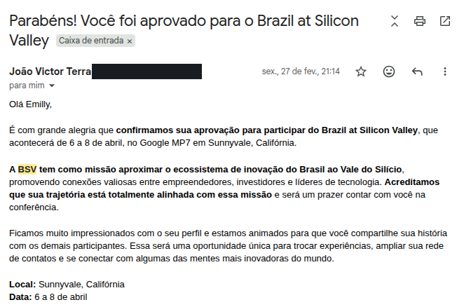
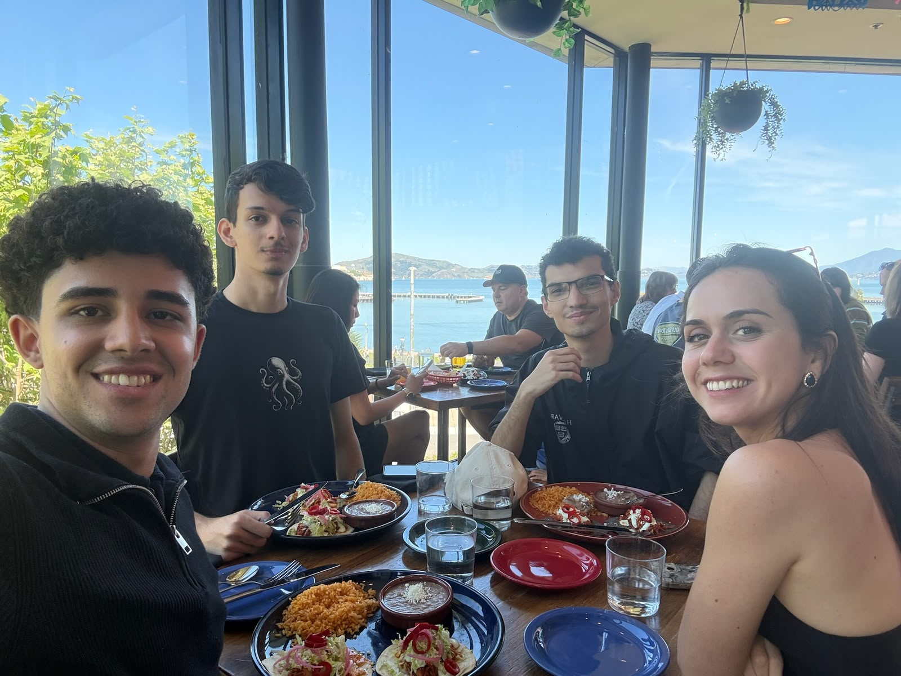
Gente de tantas áreas diferentes
O Brazil at Silicon Valley aproxima pessoas do Brasil da comunidade de tecnologia e empreendedorismo do Vale do Silício. A edição de 2026 aconteceu no Google MP7, em Sunnyvale, de 6 a 8 de abril. E lá estava eu, podendo participar daquilo.
Conversei com founders, investidores, pesquisadores, gente do direito, de IA e de várias outras áreas. Gostei muito de as conversas irem tão além da minha própria área. Era tanta gente pra conhecer e tanta coisa que eu queria perguntar. Em algum momento, ficou muito claro que eu queria voltar.
Lugares que eu só conhecia de longe
Além dos eventos, visitei empresas e universidades. Conheci Stanford, Berkeley e também passamos pela Meta. Estar em Stanford foi um daqueles momentos em que eu ficava pensando: eu tô aqui mesmo.
Em Berkeley, fotografei até uma vaga de estacionamento reservada para um ganhador do Nobel. Eu queria guardar esses detalhes também.

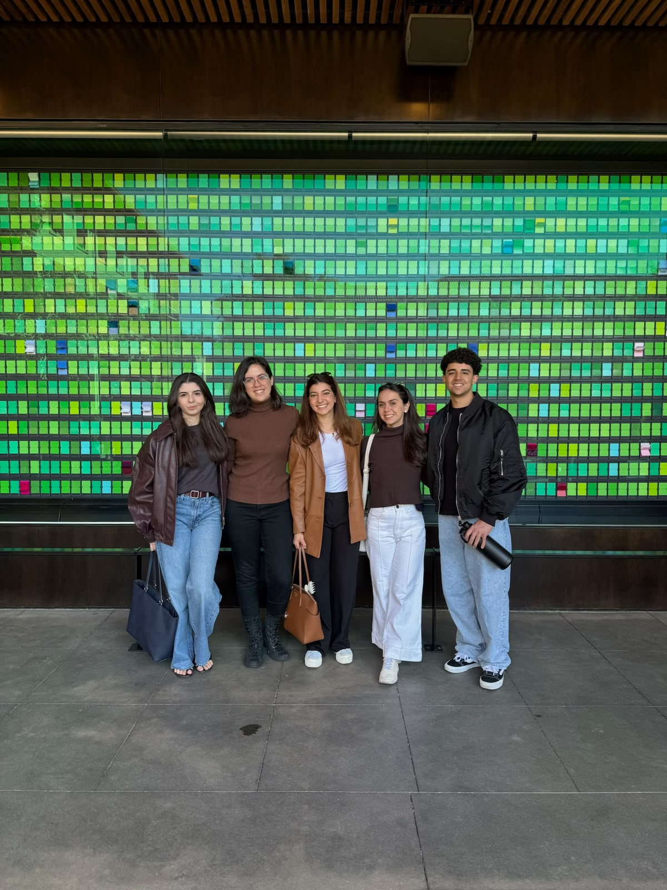
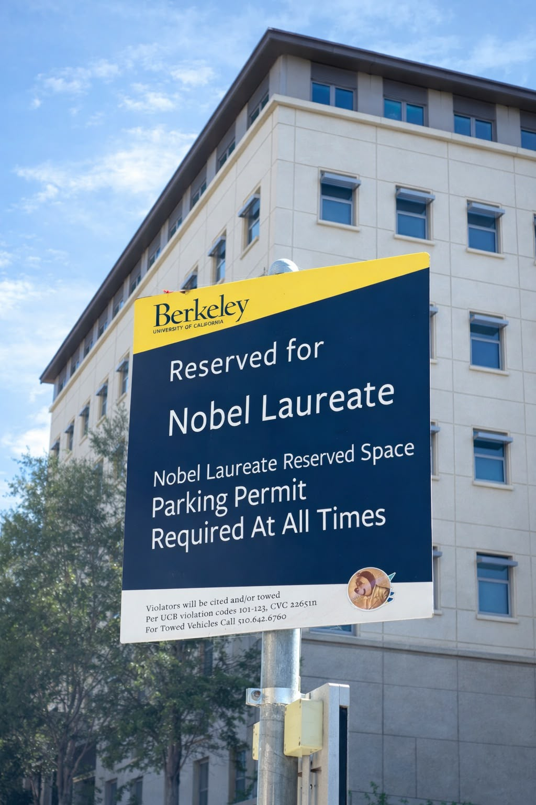
E depois, Boston
Como eu já estava nos Estados Unidos, decidi ir também ao Brasil Project. Essa parte da viagem eu paguei por conta própria. A Fundação Estudar financiou minha participação no Brazil at Silicon Valley; seguir pra Boston foi uma decisão minha, separada daquele apoio.
A primeira edição do Brasil Project aconteceu de 10 a 12 de abril, em Harvard e no MIT, em Cambridge, perto de Boston, reunindo conversas sobre Brasil, tecnologia, negócios e vida pública. Pude conhecer as duas universidades. Passei tanto tempo vendo essas instituições de longe e, agora, estava vendo tudo pessoalmente. Foi um sonho realizado mesmo.
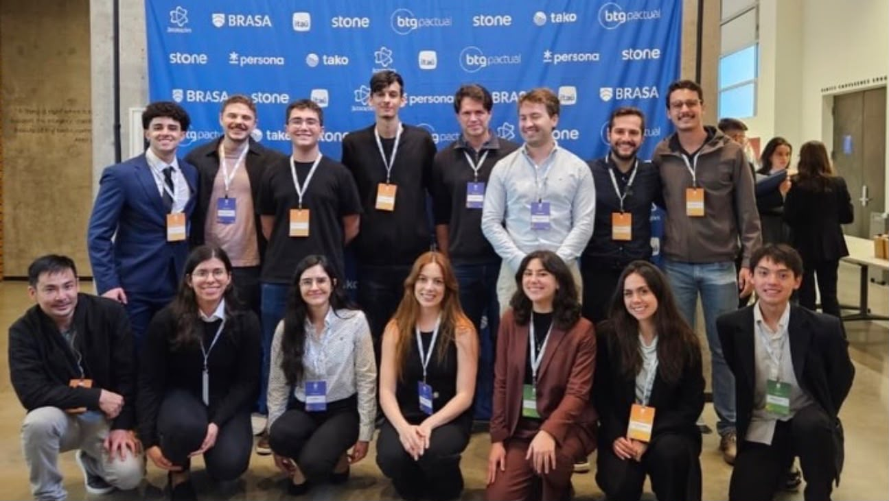
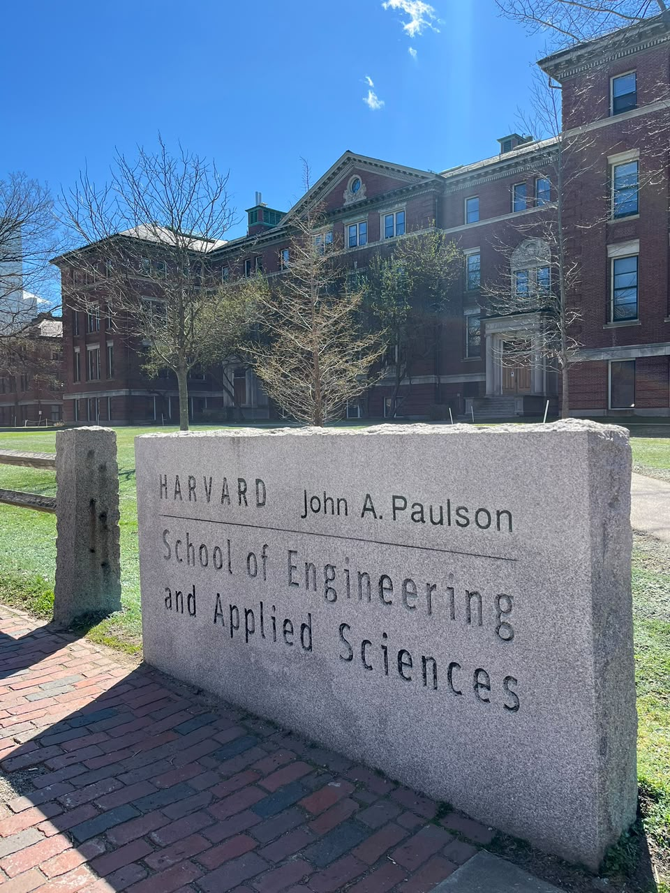
Uma conversa no AeroAstro
No MIT, tive a oportunidade de conversar com a professora Kerri Cahoy, do AeroAstro, sobre diferentes áreas de pesquisa, incluindo satélites. Ela lidera o STAR Lab, que trabalha com tecnologias espaciais como pequenos satélites e comunicações a laser.
Poder ter essa conversa pessoalmente significou muito pra mim. Conhecer o campus já era incrível; conseguir conversar sobre as áreas que me interessam deixou a visita ainda mais marcante.


E teve muita vida no meio disso
Era minha primeira vez na Califórnia. Até os ônibus escolares amarelos me animavam: eu tinha visto aquilo tantas vezes nos filmes e agora estava ali, na minha frente. Andamos de bicicleta na Golden Gate e fomos ver um jogo de basquete com o brasileiro Gui Santos.
Teve almoço junto, passeio, convivência no apartamento e muita risada. Algumas das pessoas que conheci nessa viagem continuam próximas de mim até hoje. Quando olho as fotos, lembro de como era divertido estar ali com aquela turma.

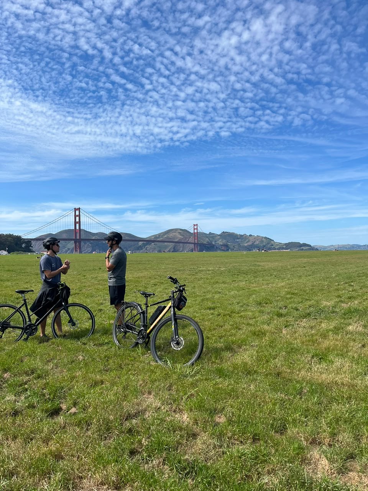

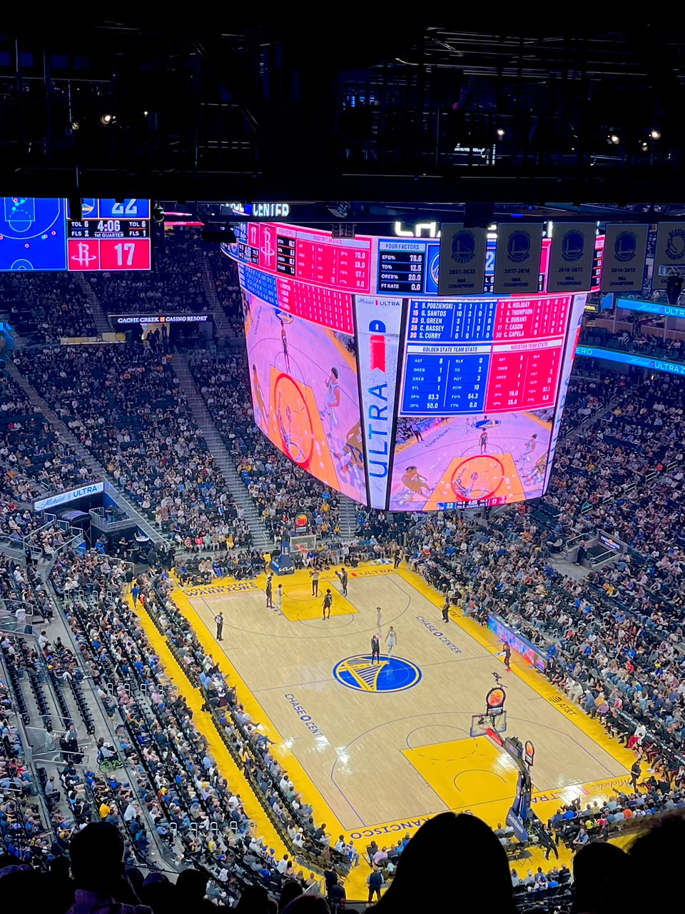

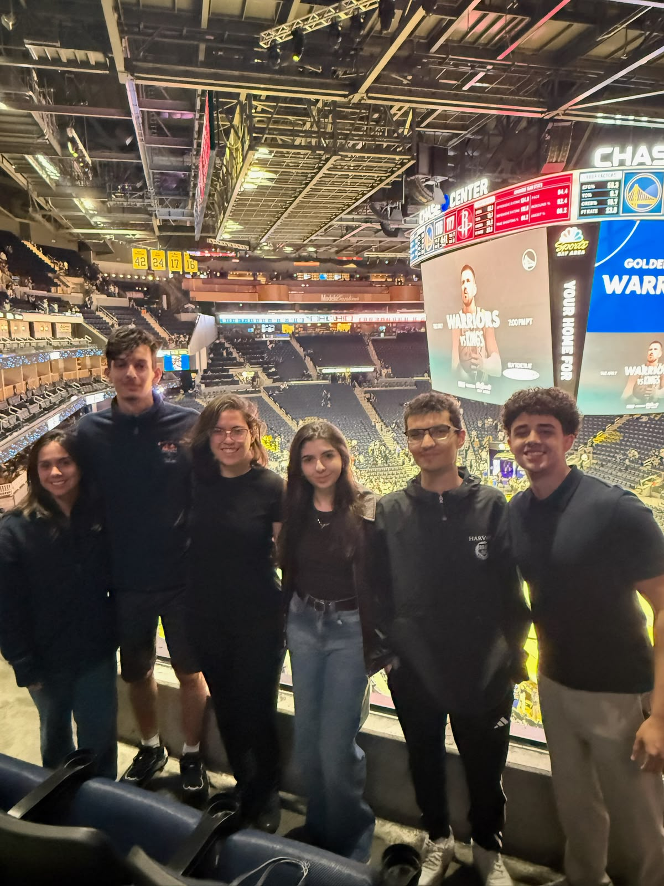

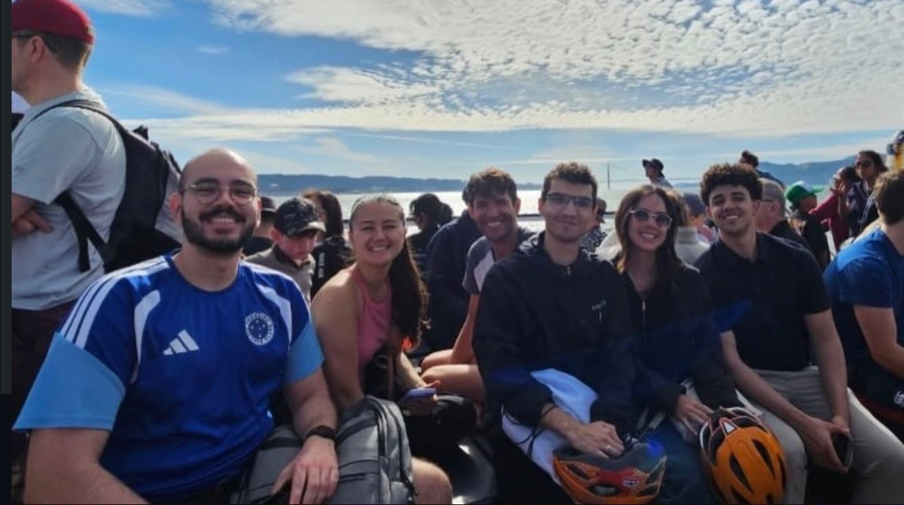

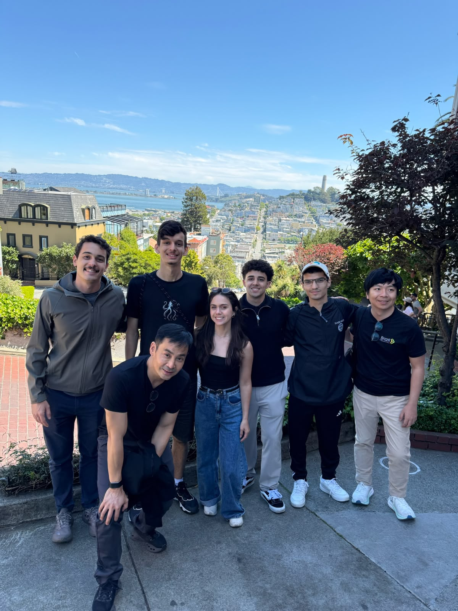

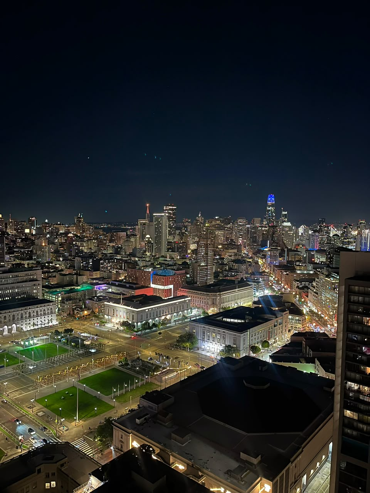
Voltei querendo experimentar mais
Foi nessa viagem que experimentei o Claude pela primeira vez. Ele já existia, mas eu ainda não tinha usado. Lembro de ficar impressionada por a tecnologia já estar naquele nível.
Voltei pro Brasil querendo andar mais rápido nos meus projetos: experimentar, ver como funciona e fazer outra versão. Foi uma das coisas que trouxe comigo, junto com as amizades e aquela certeza de que queria voltar.
Ainda não sei explicar muito bem tudo o que essa viagem significou pra mim. Foi uma loucura. E foi incrível.
Emilly← Voltar ao diário